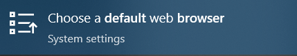

Set Chrome as Your Default Browser
To make sure things run smoothly, we need to make sure Chrome is set as the default browser for your computer.
- 1In the search bar at the bottom of your screen, type default browser
- 2In the menu that appears, select Choose a default web browser

- 3Make sure Google Chrome is your default web browser

PHS Cell Phone Policy
- Cell phones are permitted on campus during school hours, but must be used according to the CUSD Bring Your Own Technology Agreement (BYOT).
- In classrooms, cell phones must be stored in backpacks or in the classroom phone caddy.
- During class time, phones may be used at the discretion of the teacher for educational purposes. Texting, taking pictures or video, social media, games, or other non-educational use is not permitted.
- Students may not take cell phones when leaving the classroom.